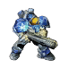
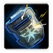
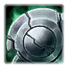
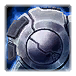
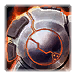
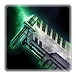
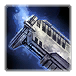
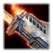
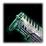

Unit Duplication
Duplicating units allows you to create separate units that have different attributes from the originals. It can even be used as a baseline to create an entirely new unit.
What should I duplicate?
If your goal is to create a variant of an existing unit, the duplication target should be obvious. If your intention is to create something unique, I would still recommend duplicating a unit that mechanically resembles the unit you have in mind. There are a lot of different fields that can be glossed over, so you'll want to work with a good baseline. In this tutorial, we'll cover duplicating a Marine.
How to Duplicate a Unit
Before you start duplicating, you need to determine what aspects of the unit you want to make modifications to. The more things you choose, the more control you'll have, but the more space used by your map. It's best to avoid duplicating anything that you don't need to.
Select the data that you want to duplicate:
Data that is desirable for duplication will be checked on the object explorers shown on this page depending on what you've selected.
*There is a difference between a model file and model data, as well as a sound file and sound data. In this tutorial I'm only referring to model data and sound data. Most model files and sound files already have model data and sound data that you can reference in actor fields, so I personally do not recommend duplicating them unless you need to.
Data is color-coded depending on where it originates.
- Grey data is part of the game's Core data dependency. You usually do not want to duplicate these.
- Blue data is part of a standard dependency, such as an expansion's data or its campaign data.
- Orange data is part of a non-standard dependency that was created by you or another user.
- Green data is part of the map or mod that you're editing. This is data a user has changed or created.
- Light Green data is part of the map or mod that you're editing. It's a child of other data and hasn't been edited directly.
While you can cover most of the data when duplicating from a Unit, it often leaves out pieces of data due to imperfections of the object explorer. As a result, we'll be duplicating a unit, its weapon, and its ability separetly.
Unit Data ^
-  Marine
Abilities
- Attack
- Marine - Stimpack
- Move
- Stop
Actors
Generic Attack Damage Model
Generic Attack Damage Sound
Generic Attack Impact Model
Generic Attack Impact Sound
Generic Attack Launch Model
Generic Attack Launch Sound
- Marine
Marine Attack
Marine_Death
Stimpack End Impact
Behaviors
- Marine - Stimpack
Buttons
- Attack
- Hold Position
- Move
- Patrol
- Stop
- Use Stimpack
Effects
Marine - Gauss Rifle (Damage)
Marine - Stim Pack (Apply Buff)
Models
Blood Target Impact
Invisible
Marine
Marine Attack Impact
Marine Attack Launch
Marine Bunker Attack Launch
Marine Death
Marine Death Acid
Marine Death Blast
Marine Death Eat
Marine Death Eviscerate
Marine Death Fire
Marine Death Ragdoll
Portrait - Marine
Protoss Small Unit Death Low
Stimpack End Impact
Terran Small Unit Death Low
TerranSmallBiologicalUnitDeathLow
Zerg Small Unit Death Low
Movers
Ground
Requirement Nodes
AllowUnit(Marine)
Sounds
Marine_Attack
Marine_AttackImpact
Marine_AttackLaunch
Marine_BunkerAttackLaunch
Marine_Death
Marine_DeathFXBloodSpray
Marine_DeathFXEat
Marine_DeathFXEviscerate
Marine_DeathFXFire
Marine_Help
Marine_Pissed
Marine_Ready
Marine_StimPackVO
Marine_What
Marine_Yes
Uni_DeathFXAcid
Uni_DeathFXSilentKill
Upgrades
-  Marine - Combat Shield
- Stimpack
-  Terran Infantry Armor Level 1
-  Terran Infantry Armor Level 2
-  Terran Infantry Armor Level 3
Terran Infantry Armors
Terran Infantry Weapons
-  Terran Infantry Weapons Level 1
-  Terran Infantry Weapons Level 2
-  Terran Infantry Weapons Level 3
Weapons
-  Marine - C-14 Gauss Rifle
While units tend to have a lot of moving parts, the units themselves are fundamentally pretty simple.
To duplicate a unit, there are only a small handful of items that you'll need. The unit data, which if you're duplicating from the Unit's entry, should already be selected. For us, it's called Marine and is the top-most entry in the data tree.
Additionally, you'll want the unit's primary unit actor, which should share a name similar to the Unit and will often stand out with an icon that resembles the unit. In our case, it's called Marine.
These are the only two data entries needed to get a unit to fundamentally act like a unit. There are sometimes a few extra actors that you can choose to duplicate if you want their functionality. Two examples include a Death sound actor and a Splat actor.
Many units have an actor that has the name of the unit suffixed by _Death. This is a sound actor that grants the unit a chance to play a death sound when it dies. You may also duplicate this if you want to retain that functionality. For us, Marine_Death
Some structures will also have a Splat actor that can be useful to duplicate which creates an image beneath the structure making it feel more grounded in the world. It uses the unit's name followed by Splat. For now we're only focusing on a unit.
Unit Models ^
In most cases you should change the unit actor's fields to specify different models, but duplicating models is useful if you're importing new model files or using models that don't have associated model data in your dependencies.
While all of a marine's models are shown here, it's still best practice to duplicate as few items as possible. If you don't have a replacement model for any of the following or one already exists in the model data, you likely do not need to duplicate it.
Unit Model
The unit's model is declared in the unit actor's Art: Model field and usually shares the same name as the unit itself. In this case, Marine.
Portrait
The unit's portrait is declared in the unit actor's Art: Model (Portrait) field. Most portraits will either have the unit named prefixed with Portrait - or suffixed with Portrait. In our case, Portrait - Marine.
Death Models
Units have a number of death models that are located within the unit actor's Death Effects. These are usually identified by the Unit's name suffixed by Death and sometimes further suffixed more specific variants such as Fire and Acid. Here's a list of what we'd be interested in if we want to change all of them for our Marine:
Marine DeathMarine Death AcidMarine Death BlastMarine Death EatMarine Death EviscerateMarine Death FireMarine Death Ragdoll
The Ragdoll death model is a more special case that is instead defined in a unit actor's Custom Death field.
Unit Sounds ^
In most cases you should change the unit actor's fields to specify different sounds, but duplicating sounds is useful if you're importing new sound files or using sounds that don't have associated sound data in your dependencies.
While all of a marine's sounds are shown here, it's still best practice to duplicate as few items as possible. If you don't have a replacement sound for any of the following or one already exists in the sound data, you likely do not need to duplicate it.
Voice Lines
Voice lines are declared in the unit actor's Sound: Sounds field. Voice Lines typically have the unit's name suffixed by the particular voice line index it's reprensenting such as _What and _Ready. Here's a list of the Marine's voice lines:
Marine_AttackMarine_HelpMarine_PissedMarine_ReadyMarine_WhatMarine_Yes
Additionally, some abilities have custom voice lines that are played when the unit casts the ability that are defined in the Ability Sounds field. These typically have the unit's name suffixed by _, the ability name, and VO. In our case, the Marine has Marine_StimPackVO.
Death Sounds
Units have a number of death sounds that are located within the unit actor's Death Effects. These are usually identified by the Unit's name suffixed by _DeathFX and further suffixed with more specific variants such as Eviscerate and Fire. Here's a list of what we'd be interested in if we want to change all of them for our Marine:
Marine_DeathFXBloodSprayMarine_DeathFXEatMarine_DeathFXEviscerateMarine_DeathFXFire
The Marine also utilizes some more generic death sounds shared by multiple units:
Uni_DeathFXAcidUni_DeathFXSilentKill
And finally, there's Marine_Death, which is the sound used by the Marine_Death actor.
Weapon Data ^
- Marine - C-14 Gauss Rifle
Actors
Generic Attack Damage Model
Generic Attack Damage Sound
Generic Attack Impact Model
Generic Attack Impact Sound
Generic Attack Launch Model
Generic Attack Launch Sound
Marine Attack
Effects
Marine - Gauss Rifle (Damage)
Models
Blood Target Impact
Marine Attack Impact
Marine Attack Launch
Marine Bunker Attack Launch
Sounds
Marine_AttackImpact
Marine_AttackLaunch
Marine_BunkerAttackLaunch
Units
- Changeling (Marine with shield)
- Changeling (Marine)
- Marine
- Scope Test
Upgrades
Terran Infantry Weapons
- Terran Infantry Weapons Level 1
- Terran Infantry Weapons Level 2
- Terran Infantry Weapons Level 3
Most weapons can also be duplicated from the unit's data, although there are some instances of complex or unusual weapons that use effect trees that the object explorer will not properly track.
Weapons are often simple instant or projectile-based effect trees. The first thing you'll want to duplicate is the weapon data itself, which has the name of the weapon, usually as shown in-game and typically is located toward the bottom of the object tree. Sometimes the weapon will also be suffixed by our unit name and a hyphen. In our case, we want to add Marine - C-14 Gauss Rifle.
You will probably want to duplicate all of a weapon's effects. The names here can vary but usually follow one of two formulas:
The unit named, followed by a hyphen, followed by the weapon name, followed by a descriptor of the effect, sometimes in parentheses. This is what our Marine uses. Seeing how we have a very simple effect chain with Marine, there is only one effect, Marine - C-14 Gauss Rifle (Damage).
Another formula uses the name of the unit followed by an effect descriptor. Here's an example of the Hellbat's weapon effect tree for reference:
Hellbat Example
Effects
Hellion Tank
Hellion Tank Apply Behavior
Hellion Tank Damage
Hellion Tank Search
Hellion Tank here is the "primary" effect. It's most likely named this way because it shares the same ID as the Weapon which by default is used to determine the starting effect used when attacking, which might save on space.
Opinion: I do not take this as a best practice and prefer names that describe the effect tree rather than what unit it's associated with.
A weapon will usually have an action actor, often referred to as an attack actor for weapons, that handle the majority of how the weapon is visualized (models and sounds) in the world. Mostly, these are represented by our unit name suffixed by Attack. We want Marine Attack.
Weapons with projectiles have a Launch Missile effect (see above about duplicating effects). They also have a Missile actor, which is usually formatted with the unit's name suffixed by Attack Missile and a Weapon unit that is usually the unit's name followed by Weapon. You will want to duplicate all of these for the best chance that they get linked together.
Weapon Models ^
In most cases you'll probably just want to change the attack actor's fields to specify different models, but duplicating models is useful if you're importing new model files or using models that don't have associated model data in your dependencies.
Attack actors contain the majority of references to model data for a units' weapons.
The impact models are located in the attack actor's Impact Map field. The impact model usually follows the format of the unit's name, followed by Attack Impact. In our case Marine Attack Impact. There can be other models that can be found in the field as well depending on the target, such as how the Marine uses the generic Blood Target Impact when hitting Flesh units.
The launch model is located in the attack actor's Launch Assets field. The launch model usually follows the format of the unit's name, followed by Attack Launch. In our case, Marine Attack Launch.
In some cases, such as with the Marine, there is can be an additional launch model that comes from a container such as the Bunker located in the attack actor's Container Assets. The Marine uses Marine Bunker Attack Launch for this.
Weapon Sounds ^
In most cases you'll probably just want to change the attack actor's fields to specify different sounds, but duplicating sounds is useful if you're importing new sound files or using sounds that don't have associated sound data in your dependencies.
Attack actors contain the majority of references to sound data for units' weapons.
The impact sounds are located in the attack actor's Impact Map field. The impact sound usually follows the format of the unit's name, followed by _AttackImpact. In our case Marine_AttackImpact. There can be other sounds that can be found in the field as well depending on the target.
The launch sound is located in the attack actor's Launch Assets field. The launch sound usually follows the format of the unit's name, followed by _AttackLaunch. In our case, Marine_AttackLaunch.
In some cases, such as with the Marine, there is can be an additional launch sound that comes from a container such as the Bunker located in the attack actor's Container Assets. The Marine uses Marine_BunkerAttackLaunch for this.
After duplicating everything, you can return to the unit and replace the weapon with the newly duplicated weapon in the unit's `Weapon` field.
Ability Data ^
- Marine - Stimpack
Abilities
- Stimpack Redirect
Actors
- Changeling Marine
- Changeling Marine Shield
- Marine
Marine_Stimpack
Stimpack End Impact
Stimpack Start Impact
Behaviors
- Marine - Stimpack
Buttons
- Use Stimpack
Effects
Marine - Stim Pack (Apply Buff)
Models
Changeling Death Marine
Invisible
Marine
Marine Death
Marine Death Acid
Marine Death Blast
Marine Death Eat
Marine Death Eviscerate
Marine Death Fire
Marine Death Ragdoll
Portrait - Marine
Protoss Small Unit Death Low
Stimpack End Impact
Stimpack Start Impact
Terran Small Unit Death Low
TerranSmallBiologicalUnitDeathLow
Zerg Small Unit Death Low
Requirement Nodes
CountUpgrade(Stimpack,CompleteOnly){Research Stimpack at the Barracks Tech Lab}[TechTreeCheat]
CountUpgrade(Stimpack,QueuedOrBetter)
Requirements
Use Stimpack
Sounds
Changeling_MarinePissed
Changeling_MarineReady
Changeling_MarineWhat
Changeling_MarineYes
Changeling_Explode
Marine_Attack
Marine_DeathFXBloodSpray
Marine_DeathFXEat
Marine_DeathFXEviscerate
Marine_DeathFXFire
Marine_Help
Marine_Pissed
Marine_Ready
Marine_StimPack
Marine_StimPackVO
Marine_What
Marine_Yes
Uni_DeathFXAcid
Uni_DeathFXSilentKill
Units
- Marine
Abilities tend to vary pretty wildly, so it would serve to follow ability effect trees to understand how they work. Unfortunately the number of different naming schemes that abilities tend to follow is too vast to give a thorough enough explanation, but for the most part, if an effect or actor has the ability name in its name, it's probably safe to assume it's associated with it.
StimPack has a few different missing entries when browsing the object exporer for duplicating the Marine. This is an example of why it can be better to duplicate each ability from the ability itself and then replace them on the unit after the fact. This example will use this method for completion sake.
For our case, the Marine's StimPack is a pretty simple ability. There are a few different parts of the Stimpack we would want to duplicate. The ability data itself, Marine - StimPack is the easy one.
The effect data is also fairly obvious, using a similar name to our ability, Marine - Stim Pack (Apply Buff).
The behavior data is again similar to the ability name, Marine - Stimpack.
There is also a button that you can duplicate called Use Stimpack if you want to change the button's text, name, or hotkey.
StimPack actually has three pieces of actor data that we would want to duplicate. Stimpack End Impact, Stimpack Start Impact around model actors and Marine_Stimpack is a sound actor.
Stimpack is associated with an upgrade that must be researched to unlock it. There are many ways to handle this. The easiest would be to ignore it, and the ability will only be accessible when you unlock the stimpack upgrade. If you want it to always be available, you could remove the requirement from the ability data's Commands' Execute field. Or you could create a new upgrade and requirement, but that's beyond the scope of this tutorial.
Ability Models ^
In most cases you'll probably just want to change the models located in your ability's model actor's fields to specify different models, but duplicating models is useful if you're importing new model files or using models that don't have associated model data in your dependencies.
Stimpack's model data uses names that are similar to the ability data: Stimpack End Impact and Stimpack Start Impact.
Ability Sounds ^
In most cases you'll probably just want to change the sounds located in your ability's sound actor's fields to specify different sounds, but duplicating sounds is useful if you're importing new sound files or using sounds that don't have associated sound data in your dependencies.
Stimpack's sound data uses a name that is similar to our ability data: Marine_Stimpack.
After duplicating everything, you can return to the unit and replace the ability with the newly duplicated ability in the unit's `Ability` field.
Common Pitfalls ^
There are a number of common issues with duplicating that you might come across. I hope to shine a light on some of them.
Burrowing Units
There are a few issues with duplicating burrowing units, particularly if you try to duplicate both the unburrowed and burrowed variants at the same time.
You might notice that the burrowed variant of the unit uses the name key of the unit you duplicated. If you want it to have a different name than the original unit, you should change the
Text Keyin itsNamefield, probably to the same one that your unburrowed unit uses. Changing the burrowed unit's name before fixing the key can cause the source units to be renamed as well.Duplicating a burrowing unit will only offer the option to duplicate ability of the unit you select to duplicate. You'll need to create, edit, and link the opposite unit's abilities manually. Alternatively, you can choose to duplicate each unit separately and link the morph abilities to each other. Keep in mind that most burrowing units use a single actor.
Actors often fail to link their burrowed variant's units and abilities properly.
Actors
Actors' are prone to failing to link correctly. After duplicating a unit, it's recommended that you scan an Actor's Events and fix any items that did not properly link to your unit or its abilities or weapons.